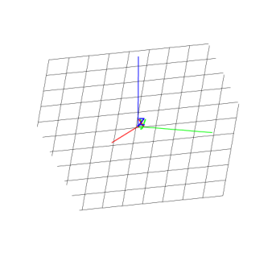
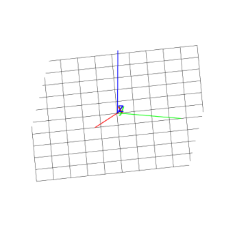

14.6.3 Tangent planes in space: tangent
See Section 13.7.7 for tangents in the plane.
The tangent command finds tangent planes to surfaces.
-
tangent takes two arguments:
-
obj, an object in space.
- P, a point in space.
If obj is the graph of a function, then P can be a
point in the domain of the function, and the point on the graph
will be used.
or
-
e, a point defined with element (see
Section 13.6.15) using a curve and parameter value.
- tangent(objP)
returns and draws the plane through P that’s perpendicular to
obj.
Examples
-
Input:
| S: = sphere([0,0,0],3) |
| tangent(S,[2,2,1])
|
Output:

- Input:
| G:=plotfunc(x^2 + y^2, [x,y]) |
| tangent(G,[2,2])
|
Output:
